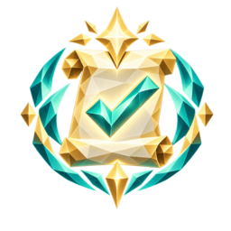
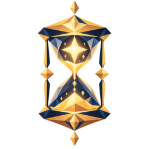
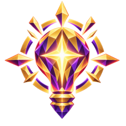

Biblioteca de conquistas — concluída / em progresso / bloqueada
Perfil
Biblioteca de Conquistas
14
Conquistadas
3
Em progresso
42%
Completo
Todas
Concluídas
Em progresso
Bloqueadas
 Fronteira Avançada
Fronteira Avançada
Primeiro Tópico Leitor Dedicado
Leitor Dedicado Coletor de Moedas
Coletor de Moedas
Pontual
Primeira Dica Sequência de 7 dias
5/7 dias
Sequência de 7 dias
5/7 diasExplorador de Perfis
2/5 turmas
 Um Mês de Estudo
17/30 dias
Um Mês de Estudo
17/30 dias Mentor da Turma
Mentor da Turma
 Baú Lendário
Baú Lendário
Maratonista
Estado adicional — modal de detalhe ao abrir uma conquista
Fronteira Avançada
Complete 2 tópicos seguidos sem errar nenhuma questão de atividade.
Concluída em 14 de setembroAo tocar em qualquer conquista da grade acima, este cartão aparece centralizado sobre a tela (com a grade escurecida ao fundo) — mostrado aqui ao lado, fora desse estado de sobreposição, só para não esconder o restante da tela neste protótipo.